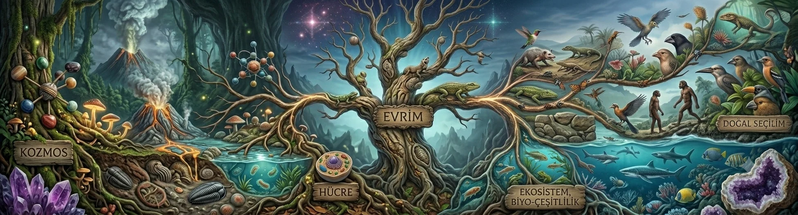

Evrim: Kalıtsal Değişim ve Ortak Köken
Biyolojik evrim, popülasyonlarda kalıtsal özelliklerin nesiller boyunca değişmesi ve canlı soylarının ortak atalardan dallanarak çeşitlenmesidir. Tek bir birey yaşamı boyunca evrimleşmez; birey gelişir, evrim ise popülasyonların nesiller arasındaki değişimini anlatır. Evrimsel biyoloji hem gözlenebilen değişimleri hem de fosil ve genetik verilerden çıkarılan uzun dönemli akrabalık örüntülerini inceler.[1]
Bilimsel kuram ne demektir?
Bilimde “kuram”, kanıtlarla desteklenen ve gözlemleri açıklayan kapsamlı bir çerçevedir; gündelik dildeki “tahmin” anlamına gelmez. Evrimsel kuram, yaşamın çeşitlenmesini açıklayan güncel biyolojik çerçevedir. Bilimsel açıklamalar yeni verilerle geliştirilebilir; bu, her açıklamanın eşit ölçüde kanıtlandığı anlamına gelmez. Doğal seçilim fikri Charles Darwin ve Alfred Russel Wallace tarafından 19. yüzyılda bağımsız biçimde ortaya kondu; kalıtım ve genetik araştırmaları sonrasında evrim mekanizmalarının anlaşılması genişledi.[2]
Evrimin kanıtları
Birbirinden bağımsız kanıt türleri aynı büyük örüntüyü destekler: fosil kayıtları canlı gruplarının zaman içindeki değişimini ve soy ilişkilerini gösterir; karşılaştırmalı anatomi ve embriyoloji ortak özellikleri ortaya koyar; DNA ve protein benzerlikleri akrabalık hipotezlerini sınamaya yardımcı olur. Canlı popülasyonlarında gözlenen kalıtsal değişimler de evrimin yalnızca uzak geçmişe ilişkin bir çıkarım olmadığını gösterir. Her fosilin eksiksiz bir geçiş dizisi sunması beklenmez; bulgular, farklı yöntemlerden gelen veriler birlikte değerlendirilerek yorumlanır.[2]
Doğal seçilim tek mekanizma değildir
Doğal seçilim için popülasyonda kalıtsal farklılıklar bulunmalı ve bu farklılıklar üreme başarısını etkilemelidir. Belirli bir çevrede bazı özellikleri taşıyan bireyler ortalamada daha fazla yavru bırakırsa bu özellikler sonraki nesillerde yaygınlaşabilir. “Daha uyumlu” olmak her koşulda daha güçlü veya daha gelişmiş olmak demek değildir; hangi özelliğin avantaj sağladığı çevreye ve zamana bağlıdır. Seçilim önceden belirlenmiş bir hedefe yönelmez ve organizmalar ihtiyaç duydukları mutasyonu bilerek üretmez.[3]
Mutasyonlar DNA'da yeni varyasyonlar oluşturabilir; etkileri yararlı, zararlı ya da belirgin biçimde nötr olabilir. Genetik sürüklenme, varyantların sıklığının rastlantısal örnekleme nedeniyle değişmesidir ve küçük popülasyonlarda daha güçlü sonuçlar doğurabilir. Gen akışı ise bireylerin veya üreme hücrelerinin popülasyonlar arasında taşınmasıyla varyantları aktarır. Bu süreçler doğal seçilimle birlikte işler; evrimsel değişimin her örneğini yalnızca seçilimle açıklamak doğru değildir.[3]
Adaptasyon ve türleşme
Adaptasyon, belirli bir çevrede kalıtsal bir özelliğin doğal seçilim yoluyla yaygınlaşmasıyla oluşan uyumdur; her özellik adaptasyon değildir ve evrim her zaman karmaşıklığı artırmaz. Türleşme de tek bir anda gerçekleşen evrensel bir olay değildir. Coğrafi veya üreme engelleri popülasyonlar arasındaki gen akışını azaltabilir; zaman içinde biriken farklılıklar bazı durumlarda yeni türlerin ortaya çıkmasına yol açar. Tür tanımının ölçütleri, özellikle eşeysiz üreyen veya fosillerden bilinen canlılarda değişebilir.[4]
İnsan evrimi düz bir merdiven değildir
İnsanlar günümüzde yaşayan diğer primat türlerinden türememiştir; insanlar ve diğer büyük insansı maymunlar geçmişte yaşamış ortak atalardan ayrılan farklı soyların üyeleridir. İnsan evrimi de tek bir çizgide ilerleyen, kaçınılmaz bir “ilerleme” değildir: birden fazla insan türü yaşamış, bazı soylar sona ermiş, bazı özellikler farklı dönemlerde ortaya çıkmıştır. Smithsonian’ın insan kökenleri özeti, insan soyunun fosil kayıtları, genetik ve arkeolojik bulgularla araştırıldığını; erken insan türlerinin akrabalık ilişkilerinin bir kısmının hâlâ tartışıldığını açıklar.[5]
Yaşamın kökeni ayrı bir araştırma sorusudur
Evrim, kendini kopyalayabilen ilk sistemlerin nasıl ortaya çıktığını açıklamaya çalışan abiogenez araştırmalarıyla aynı konu değildir. Evrimsel biyoloji, kalıtımlı canlı popülasyonlarının zaman içinde nasıl değiştiğini ve çeşitlendiğini inceler. Dünya'daki yaşamın başlangıcına ilişkin bilimsel hipotezler araştırılmaya devam etmektedir; bu sorudaki belirsizlik, sonrasında gerçekleşen biyolojik evrimin kanıtlarıyla karıştırılmamalıdır.
Kaynaklar
- University of California Museum of Paleontology. Evolution 101: An Introduction to Evolution.
- National Academy of Sciences. (2008). Science, Evolution, and Creationism.
- University of California Museum of Paleontology. Evolution 101: Mechanisms.
- University of California Museum of Paleontology. Evolution 101: Speciation.
- Smithsonian National Museum of Natural History. Introduction to Human Evolution.